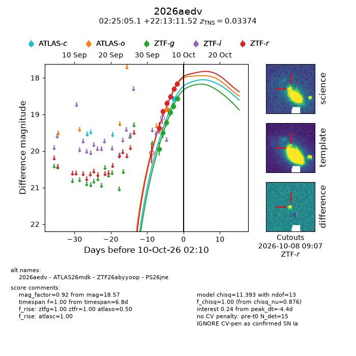
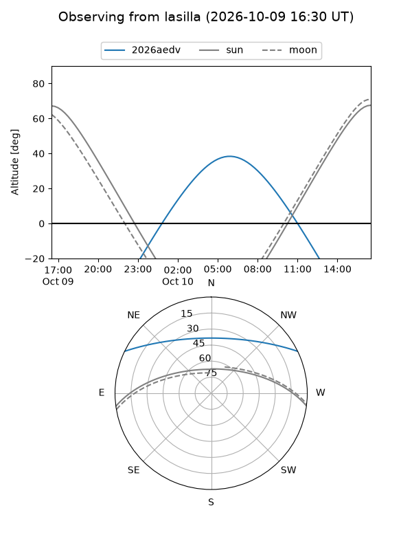
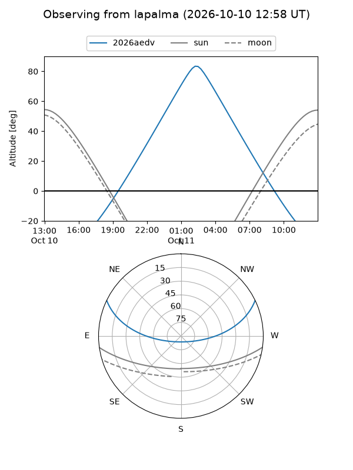
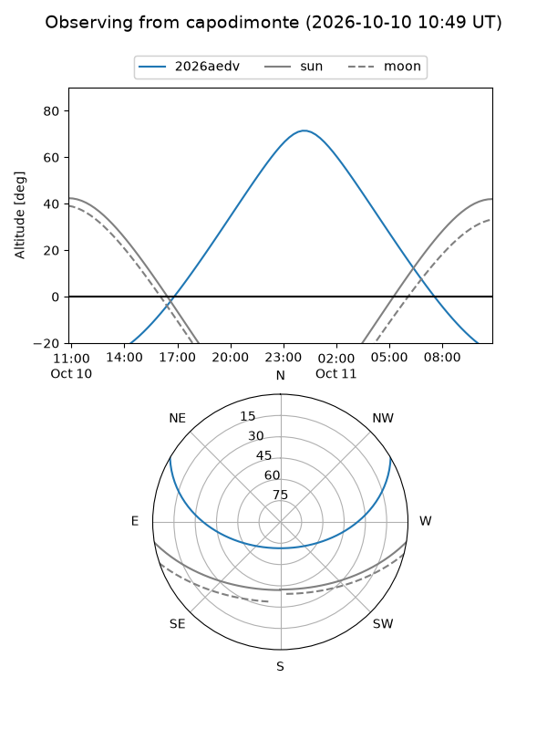
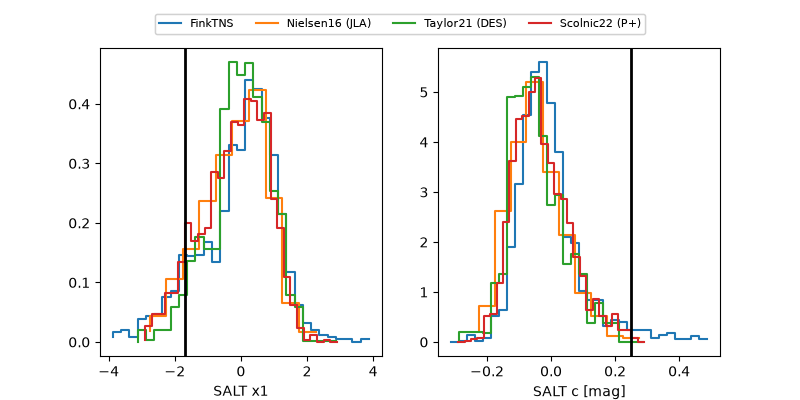

2026aedv
Target 2026aedv at 2026-10-10 14:11
Aliases and brokers:
FINK-ZTF: ztf.fink-portal.org/ZTF26abyyoop
Lasair-ZTF: lasair-ztf.lsst.ac.uk/objects/ZTF26abyyoop
ALeRCE-ZTF: alerce.online/object/ZTF26abyyoop
YSE-PZ: ziggy.ucolick.org/yse/transient_detail/2026aedv
TNS name: wis-tns.org/object/2026aedv
Direct TNS query: direct search
alt names
ZTF26abyyoop (ztf,fink_ztf)
2026aedv (tns,yse)
ATLAS26mdk (atlas)
PS26jne (panstarrs)
Coordinates:
equatorial (ra, dec) = 36.2711,+22.21987
equatorial (HMS+DMS) = 02:25:05.07,+22:13:11.52
galactic (l, b) = (149.8670,-35.70648)
Flags:
TNS type: SN Ia
TNS redshift: 0.0337
peak dt: -3.9
Photometry:
last atlasc=18.57, atlaso=18.86, ztfg=18.57, ztfr=18.17
2 atlasc, 1 atlaso, 6 ztfg, 6 ztfr detections
Lightcurve

Visibility



Additional plots
